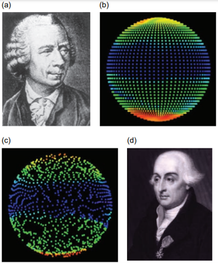
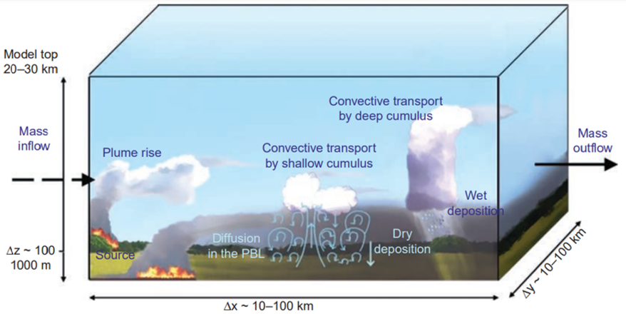
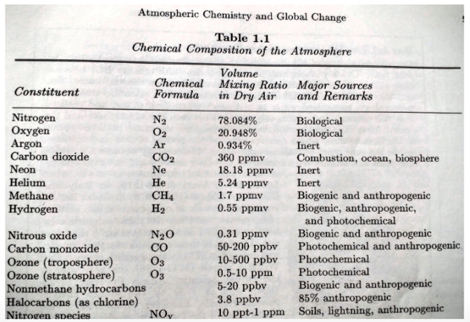
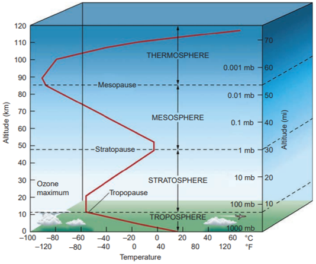
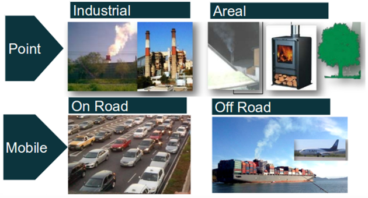
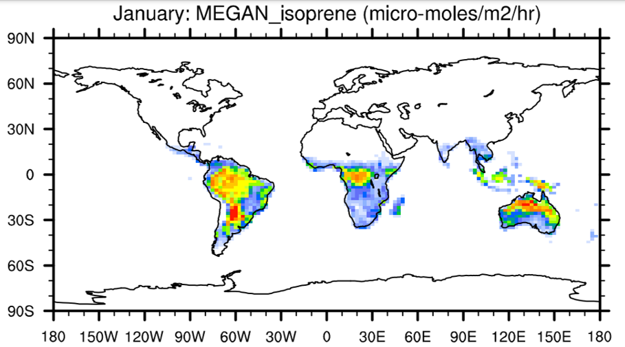
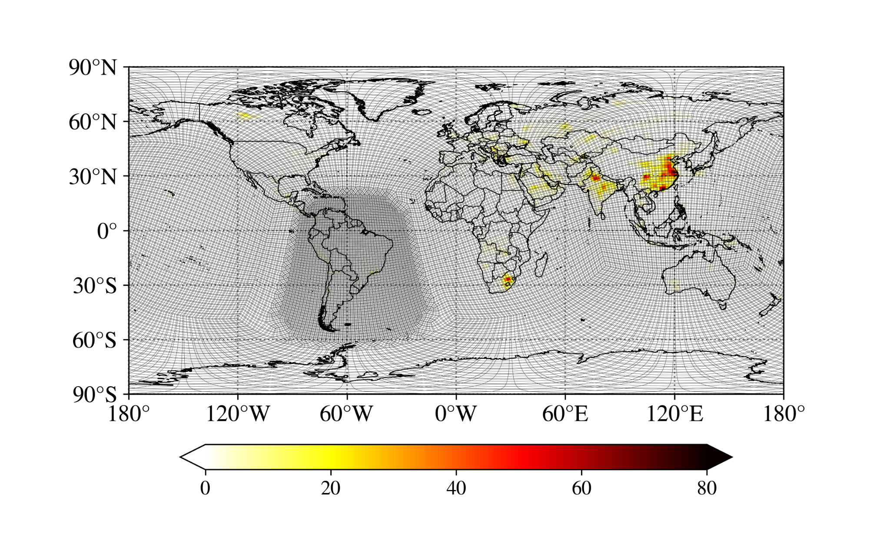
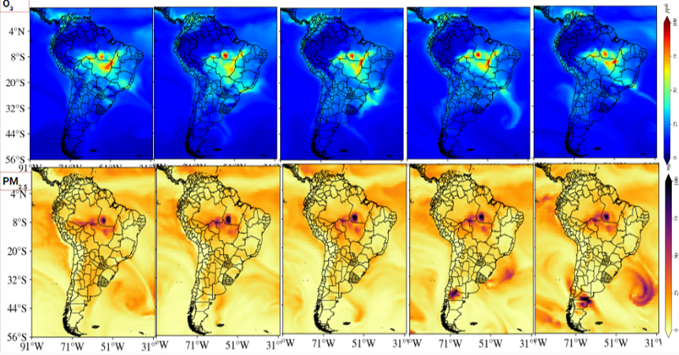

Your browser doesn't support the features required by impress.js, so you are presented with a simplified version of this presentation.
For the best experience please use the latest Chrome, Safari or Firefox browser.
Processo 2022.1.445.14.6 IAG-USP
Modelagem da qualidade do ar para poluentes secundários
Sergio Ibarra-Espinosa
Bom dia
Modelagem da qualidade do ar para poluentes secundários
Concepção e estrutura dos modelos
Condições de contorno e inicial
Inventário de emissões biogênicas e antropogênicas
Esquemas de reação para os poluentes secundarios
Processos de deposição
Concepção: O que é um modelo?
Modo simplificado de representar um fenômeno, servindo como base
de referência para um estudo analítico. https://www.dicio.com.br/modelo/
O uso de computadores tem permitido implementar modelos e suas
equações de forma eficiente.
Perspetiva historica
Vilhelm Bjerknes (1862-1951), meteorologista de Noruega,
publicou "Die Meteorologie als exakte Wissenschaft"
Meteorologia como ciência exata
Durante a primeira guerra mundial, o matemático Lewis Fry Richardson,
parte do exército francês, aplicou os conceitos de
Bjerknes desenvolvendo um sistema de prognóstico
do tempo.
Em dezembro de 1952, Londres, Inglaterra, sofreu um novo episódio de nevoeiro.
Este tinha altas concentrações de SO2.
Reportes médicos evidenciaram um grande número de doentes, especialmente crianças e pessoas idosas.
Números oficiais, 4000 mortos. Estimativas atuais, 12000. (Bell, and Davis 2001)
Bell ML, Davis DL. Reassessment of the lethal London fog of 1952: novel indicators of acute and chronic consequences of acute exposure to air pollution. EHP. 2001 Jun;109(suppl 3):389-94.
Vamos falar um pouco da importancia da poluicao do ar... um dos primeiros desastres
Estrutura: tipos de modelos

a) Leonhard Euler
b) Abordagem Euleriano com grade computacional fixa
c) Abordagem Lagrangiano, com pontos se desplazando nas massas de ar
d) Joseph Louis Lagrange
Brasseur and Jacob 2017. Modeling of atmospheric Chemistry. Cambridge University Press
Estas equações são expressas como equações diferenciais parciais.
É preciso a condição de existencia e unicidade. A solução tem que existir A solução tem que ser unica
A condição inicial pode ser data pela observação coletado in-situ ou
de um modelo geral como NOAA/GFS.
As condições de contorno são necessarias para definir os valores na borda. EARTH
Abrir link
Como representar os fenomenos?
Discretização
Procesos sub-grade (S. Freitas, 2017 em Brasseur Jacob)

Parametrizações, Turbulência, radiação, microfísica de nuvens,
conveção, processos de superfície, crescimento de partículas.
Atmosfera

Atmosfera

Poluição do ar
Resolução CONAMA 491/2018 poluente atmosférico: qualquer forma de matéria em quantidade,
concentração, tempo ou outras características, que tornem ou possam tornar o
ar impróprio ou nocivo à saúde, inconveniente ao bem-estar público,
danoso aos materiais, à fauna e flora ou prejudicial à
segurança, ao uso e gozo da propriedade ou às atividades
normais da comunidade
Primario:
Poluentes emitidos diretamente na atmosfera.
Por exemplo, Monoxido de Carbono emitido pelos carros. Secundario:
Poluentes formados na atmosfera.
Por exemplo, ozônio troposferico.
Inventario de emissões
Quantificação da massa dos poluentes liberados na atmosfera na area de estudo
durante um tempo determinado. As unidades podem ser expressadas como
fluxo de superficie (massa / area / tempo), ou como
massa sobre tempo.

Inventario de emissões veiculares
A principal fonde te poluição do ar na região metropolitana de
São Paulo são os veiculos. Por favor, faça o calculo % de veiculos leves e pesados para CO e NOx
VEIN
Vehicular Emissions INventory model, é um modelo de emissões veiculares
desenvolvido no Brasil.
Ele tem mais de 35K downloads e é usado em todo o mundo.
Consiste em um pacote de R com sub-rotina em Fortran
VEIN
VEIN
Emissões biogênicas VOCs
The Model of Emissions of Gases and Aerosols from Nature version 2.1 (MEGAN2.1):
an extended and updated framework for modeling biogenic emissions (Guenther et al., 2012)
https://gmd.copernicus.org/articles/5/1471/2012/

Mecanismos químicos
Atualmente é imposspivel representar explicitamente
todas as reações químicas em modelos de poluição do ar.
Então, o que é feito são simplificações das reações
em mecanismos químicos.
Os mecanismos químicos mais usados são RADM, RACM, CBMZ, CB05
e outros.
Carter WP. Development of a database for chemical mechanism
assignments for volatile organic emissions. Journal of the Air
& Waste Management Association. 2015 Oct 3;65(10):1171-84.
Deposição
seca
$$F=-v_d \cdot C$$
F: Fluxo de Deposição vertical (massa / area/ tempo).
C é concentração
vd é a velocidade de deposição. C e a funcao de alturaz
sobre nivel de solo.
umida
Um modelo simplificado consiste em:
$$ C=C_0 \cdot e^{-xt}$$
Sendo C as concentracao inicial e final.
Se temos concentrações e distancia
vertical entre solo e nuvem, o produto da
variação da coentração e altura da fluxo depositado.
Modelação de poluição do ar em São Paulo
Modelação de poluição do ar em São Paulo
Modelação de poluição do ar America do Sul (MUSICA)

Modelação de poluição do ar America do Sul (MUSICA)

Mais uma coisa...
Obrigado
Use a spacebar or arrow keys to navigate.
Press 'P' to launch speaker console.


 >
>